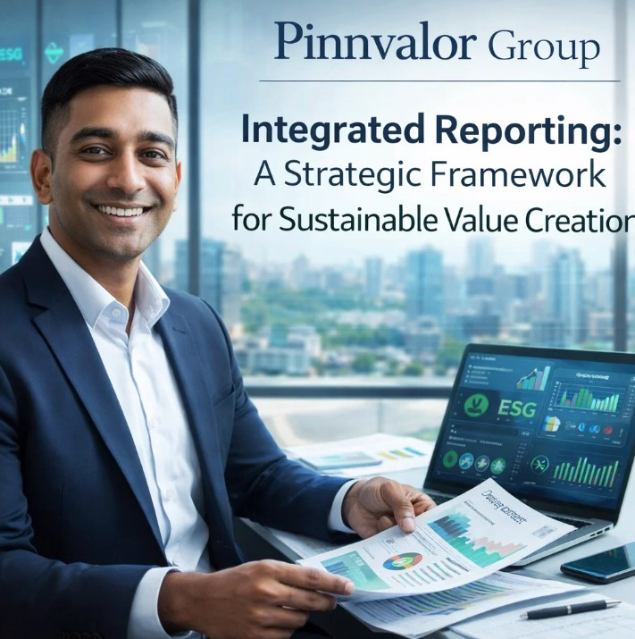

Integrated Reporting: A Strategic Framework for Sustainable Value Creation
In today’s rapidly evolving business landscape, stakeholders demand more than just financial performance—they seek transparency, sustainability, and long-term value creation. Traditional financial reporting often fails to capture the broader picture of how organizations create value over time.
Is your company leveraging integrated thinking to unlock hidden value?
Value is not created in isolation—it evolves through people, processes, and purpose. Integrated Reporting captures this journey with transparency and impact.
This is where Integrated Reporting (<IR>) emerges as a transformative approach. It combines financial and non-financial information into a single, cohesive narrative, enabling organizations to communicate how strategy, governance, performance, and prospects lead to value creation in the short, medium, and long term.
What is Integrated Reporting?
Integrated Reporting is a holistic reporting framework that provides a comprehensive view of an organization’s ability to create value. It goes beyond financial metrics to include environmental, social, and governance (ESG) factors.
How does an organization create, preserve, or erode value over time?
The Concept of Value Creation
Value creation in Integrated Reporting is not limited to profits—it includes:
- Financial growth
- Customer relationships
- Employee well-being
- Innovation and intellectual capital
- Environmental stewardship
- Social impact
The Six Capitals Framework
A cornerstone of Integrated Reporting is the Six Capitals Model:
- Financial Capital: Equity, debt, and retained earnings.
- Manufactured Capital: Buildings, machinery, and infrastructure.
- Intellectual Capital: Patents, systems, and processes.
- Human Capital: Skills, experience, and employee motivation.
- Social and Relationship Capital: Stakeholder relationships and brand reputation.
- Natural Capital: Environmental resources like water, land, and energy.

Key Principles of Integrated Reporting
- Strategic Focus and Future Orientation: Aligns reporting with long-term goals.
- Connectivity of Information: Shows interrelation between financial and non-financial data.
- Stakeholder Relationships: Highlights engagement with stakeholders.
- Materiality: Focuses on significant information.
- Conciseness: Ensures clarity without overload.
- Reliability and Completeness: Provides accurate and balanced insights.
- Consistency and Comparability: Enables benchmarking.
The Value Creation Process
Inputs → Business Activities → Outputs → Outcomes
- Inputs: Resources from six capitals.
- Business Activities: Core operations and strategy execution.
- Outputs: Products and services.
- Outcomes: Impact on stakeholders and capitals.
Benefits of Integrated Reporting
- Enhanced Decision-Making: Holistic business insights.
- Improved Transparency: Builds stakeholder trust.
- Better Stakeholder Engagement: Strengthens relationships.
- Long-Term Value Focus: Encourages sustainable growth.
- Risk Management: Identifies ESG risks early.
Challenges in Implementation
- Difficulty in measuring non-financial data
- Lack of standardization
- Data integration issues
- Organizational resistance
- Balancing detail with conciseness
Integrated Reporting in the Indian Context
In India, Integrated Reporting is gaining traction, especially among listed companies. Organizations are adopting ESG disclosures and aligning with global best practices to enhance investor confidence and corporate governance.
Future of Integrated Reporting
The future of corporate reporting is integrated, digital, and sustainability-driven. Technologies like AI and analytics will further improve the quality and relevance of reporting.
Conclusion
Integrated Reporting represents a paradigm shift in how organizations communicate value. By integrating financial and non-financial information, it provides a comprehensive framework for sustainable value creation.
In a world driven by transparency and sustainability, Integrated Reporting is not just a reporting tool—it is a strategic mindset for value creation.